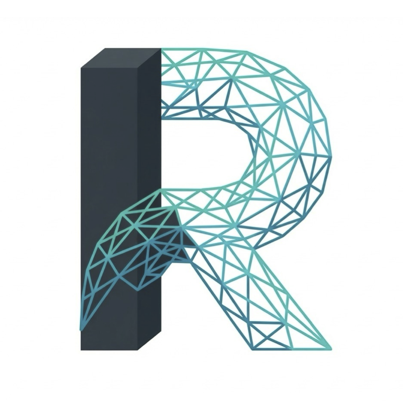
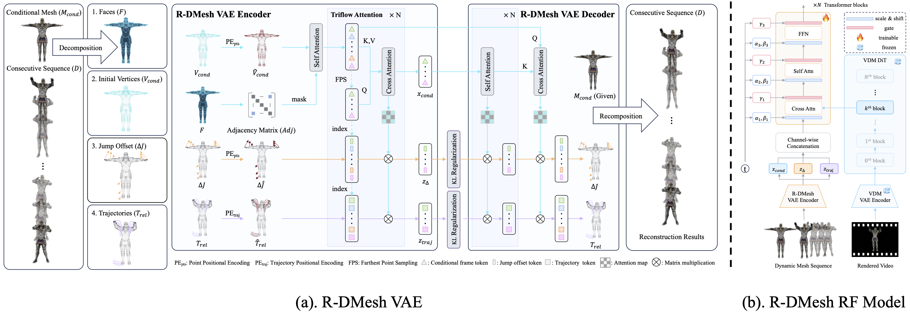
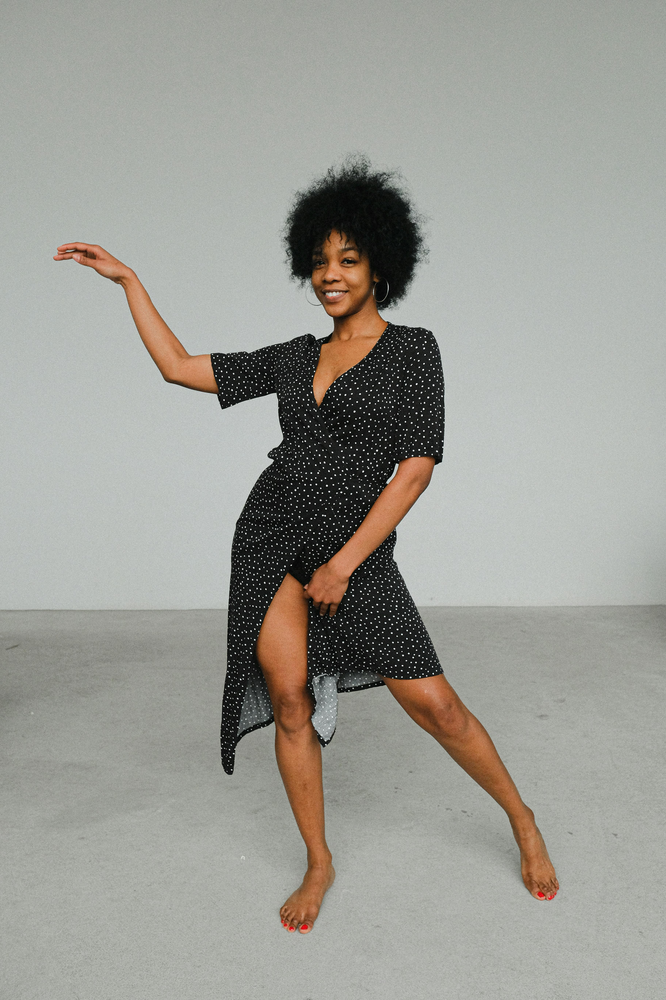
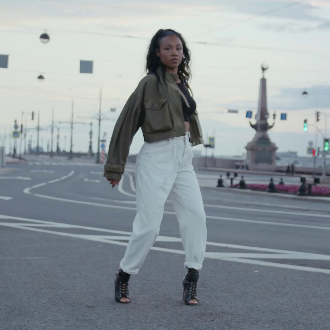
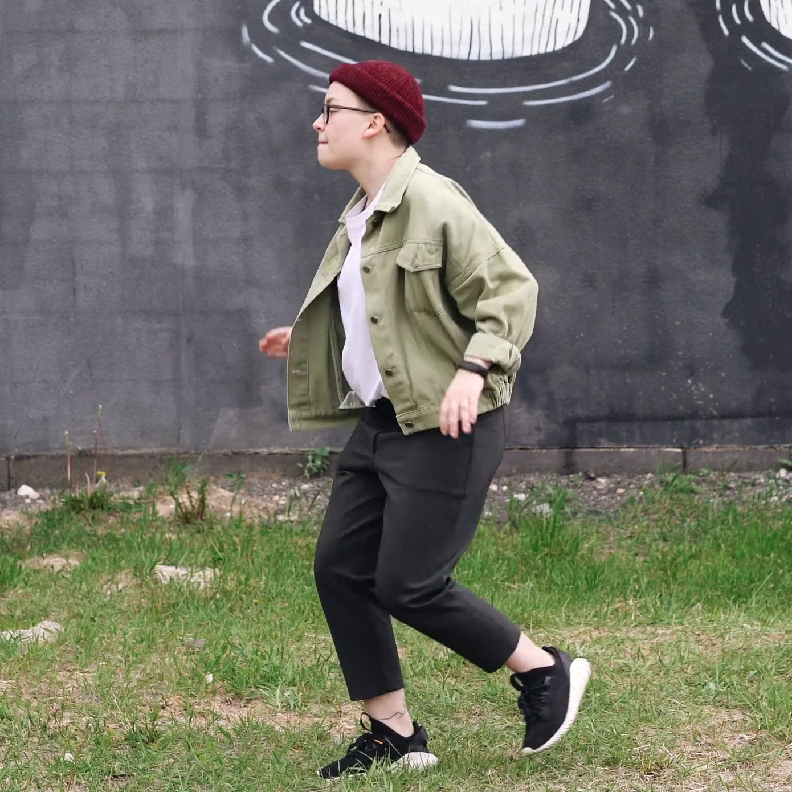
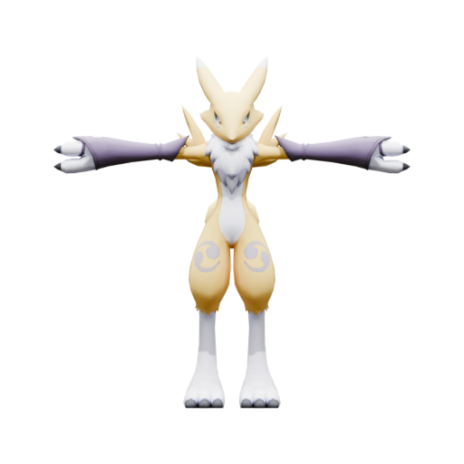
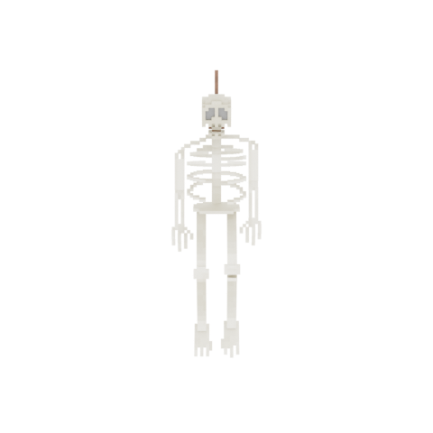

Video-guided 3D animation holds immense potential for content creation, offering intuitive and precise control over dynamic assets. However, practical deployment faces a critical yet frequently overlooked hurdle: the pose misalignment dilemma. In real-world scenarios, the initial pose of a user-provided static mesh rarely aligns with the starting frame of a reference video. Naively forcing a mesh to follow a mismatched trajectory inevitably leads to severe geometric distortion or animation failure. To address this, we present Rectified Dynamic Mesh (R-DMesh), a unified framework designed to generate high-fidelity 4D meshes that are ``rectified'' to align with video context. Unlike standard motion transfer approaches, our method introduces a novel VAE that explicitly disentangles the input into a conditional base mesh, relative motion trajectories, and a crucial rectification jump offset. This offset is learned to automatically transform the arbitrary pose of the input mesh to match the video's initial state before animation begins. We process these components via a Triflow Attention mechanism, which leverages vertex-wise geometric features to modulate the three orthogonal flows, ensuring physical consistency and local rigidity during the rectification and animation process. For generation, we employ a Rectified Flow-based Diffusion Transformer conditioned on pre-trained video latents, effectively transferring rich spatio-temporal priors to the 3D domain. To support this task, we construct Video-RDMesh, a large-scale dataset of over 500k dynamic mesh sequences specifically curated to simulate pose misalignment. Extensive experiments demonstrate that R-DMesh not only solves the alignment problem but also enables robust downstream applications, including pose retargeting and holistic 4D generation.

R-DMesh framework comprises two primary components: (a) R-DMesh VAE: Designed for the compression and reconstruction of mesh sequences involving first-frame jumps. It explicitly models the jump between the conditional mesh and the first frame of the subsequent sequence, as well as the relative trajectory distribution of the subsequent continuous frames, to simulate pose changes and motion distributions, respectively. (b) R-DMesh RF Model: A jump-relative trajectory distribution learning network utilizing the DiT architecture. The video features are extracted using the video generation model (Wan2.2-TI2V-5B).
Video-Guided 3D Animation Results (Click arrows to switch). We showcase our results on rendered video to demonstrate the alignment between the generated and GT 4D sequences.
Comparison with state-of-the-art methods on video-to-4D generation.
Input Video (Left) → Generated 4D Mesh (Right). Combined with a 3D generation model (Hunyuan3d), R-DMesh is capable of turning a in-the-wild video into high-quality 4D assets.
Thanks to our successful jump offset distribution modeling. R-DMesh enables pose retarget/transfer applications. Please select a pose image from the list to drive the character.





We demonstrate the robustness of R-DMesh on motion retargeting/transfer application across various motion types.
R-DMesh generalizes well under rendered/generated/in-the-wild videos conditions.
@inproceedings{rdmesh2024,
title={R-DMesh: Video-Guided 3D Animation via Rectified Dynamic Mesh Flow},
author={Wu, Zijie and Xu, Lixin and Jiang, Puhua and Liu, Sicong and Guo, Chunchao and Bai, Xiang},
booktitle={ACM SIGGRAPH 2026 Conference Proceedings},
year={2026},
publisher={ACM}
}